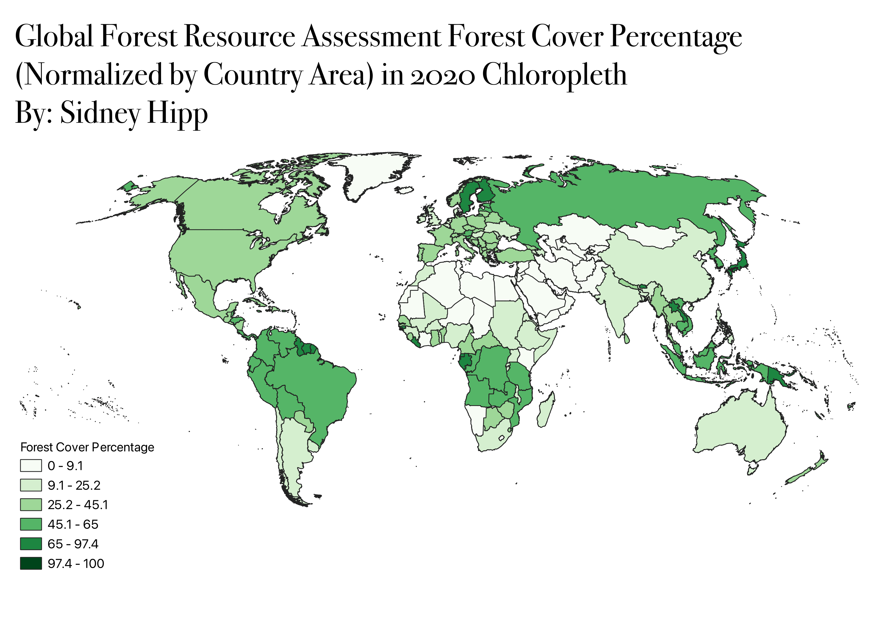

Homework 7: Make a Chloropleth or Proportional Map
My map is a chloropleth of the Global Forest Resources Assessment of 2020 that assessed forest cover of each country. The data was normalized by the area of each country in order to account for the fact that larger countries are in turn likely to have higher forest cover. Additionally, I chose a Natural Breaks data classification in order to clearly show which countries have the highest forest cover percentages. I chose to do my map on this because I am in a forestry class and I wanted to make a visual for the information I was learning about the global distribution of forest resources.

Data Source
Vector GeoJSON
Cleaned CSV File